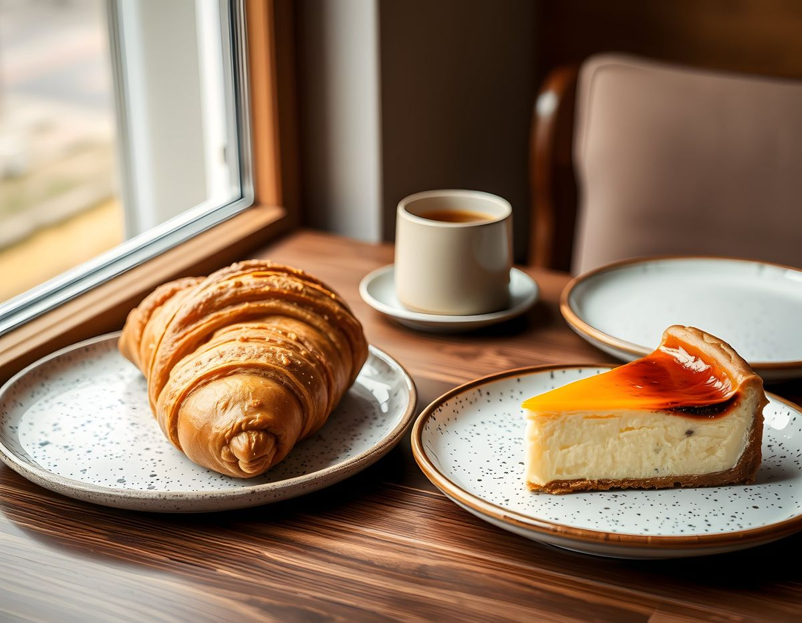
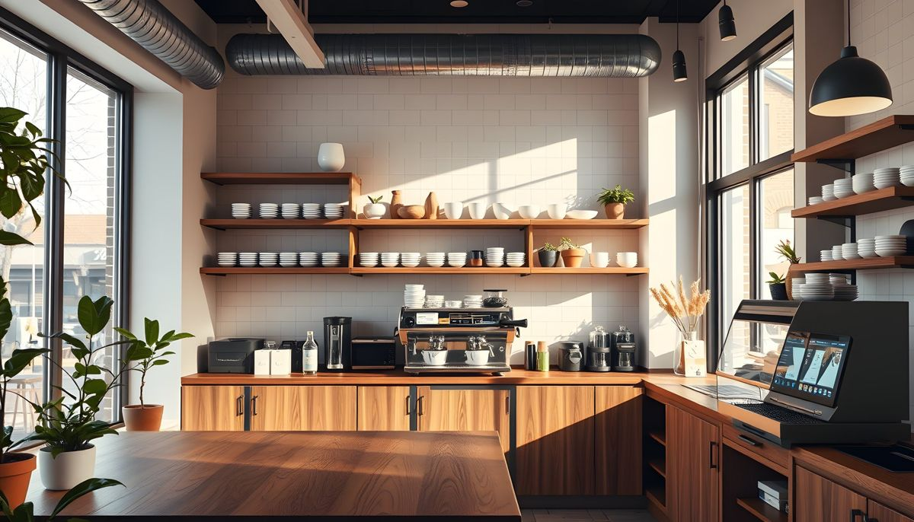

Kahve
Ürünleriniz buraya.
Kahve, tatlı ve arada bir etkinlik. Anadolu Yıldızı Sitesi'ndeki dükkânımızda bir fincanlık mola sizi bekliyor.
Başlıklar Instagram'daki öne çıkanlarınızdan alındı. Yayında her birinin altında ürünleriniz ve güncel fiyatlarınız durur; etkinlik duyurusunu da buradan yaparsınız.
Ürünleriniz buraya.

Ürünleriniz buraya.

Sıradaki etkinliğiniz buraya.
Misafirlerin paylaştığı kareler, izinleriyle burada.
Google Haritalar'da 300 civarında değerlendirmeniz var. Yoruma verilen kısa, samimi bir cevap hem yazan misafiri geri getirir hem de profile bakan yeni misafire "burada bizi dinliyorlar" der. Bu işi haftalık olarak biz üstlenebiliriz; cevaplar sizin üslubunuzla, sizin onayınızla gider.
Ne için yazdığınızı seçin; mesajınız hazır olsun, WhatsApp'ta tek dokunuşla gitsin.